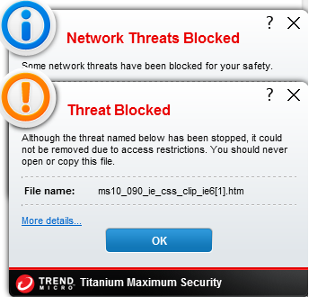
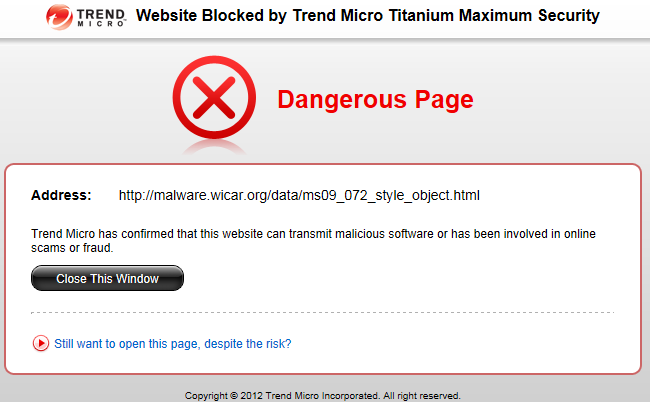
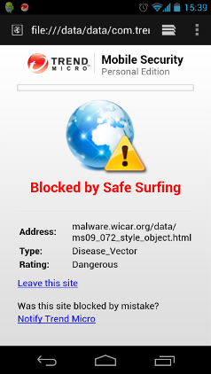
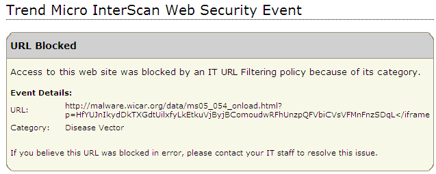
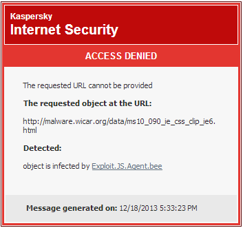
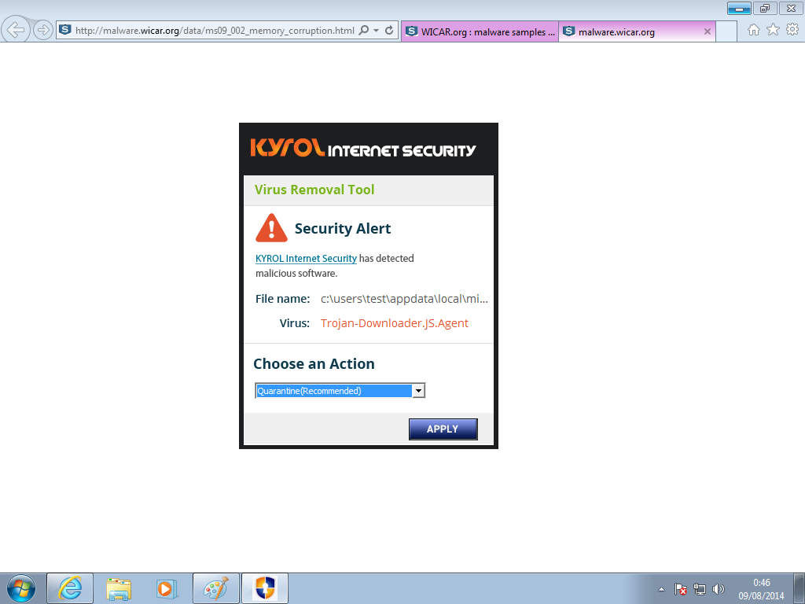
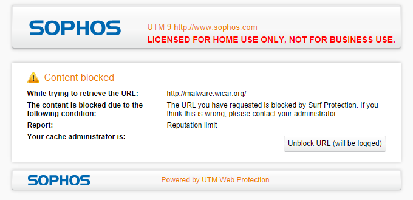

WICAR.org
Test Your Anti-Malware Solution!
Anti-malware Results
We've included a number of successful "block" events where anti-malware has detected and blocked sample exploits on WICAR.org. If you've used this website to test your corporate anti-malware solution, we'd love to hear from you! Please send a screenshot to info@wicar.org with a description of the technology deployed and the actions taken by the solution.
- Trend Micro Titanium Internet Security - Desktop Anti-virus block from Browser Cache: 
- Trend Micro Titanium Internet Security - Desktop Anti-virus block from within Internet Explorer: 
- Trend Micro Titanium Internet Security - Mobile Security block from within Android Browser: 
- Trend Micro InterScan Web Security (IWSS) - Proxy Block Page: 
- Kaspersky Internet Security 2014 - Desktop Anti-virus block: 
- Kyrol Internet Security - Desktop Anti-virus block: 
- Sophos - UTM Firewall v9 block: 
Copyright 2012, OSI Security Pty Ltd. All rights reserved.